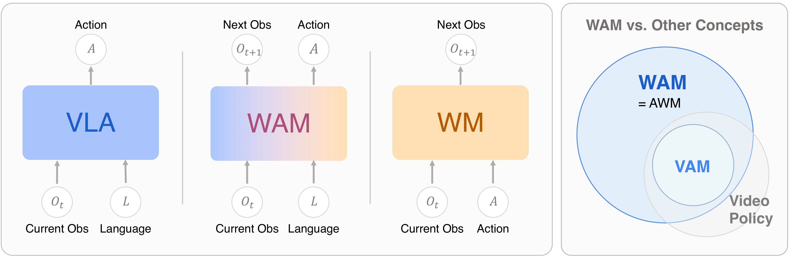
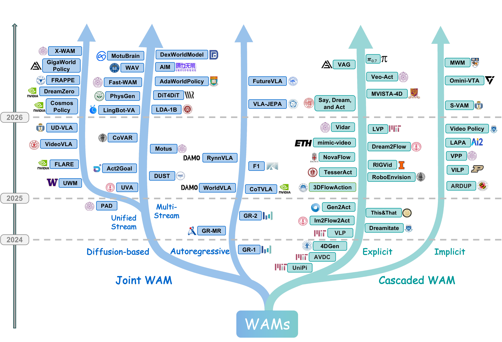
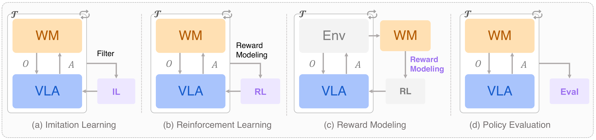
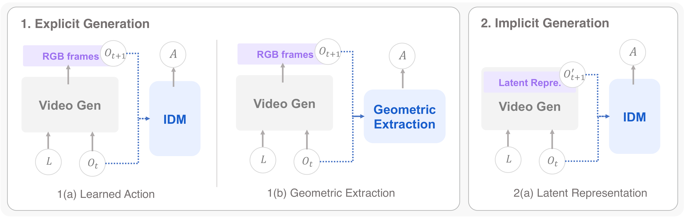
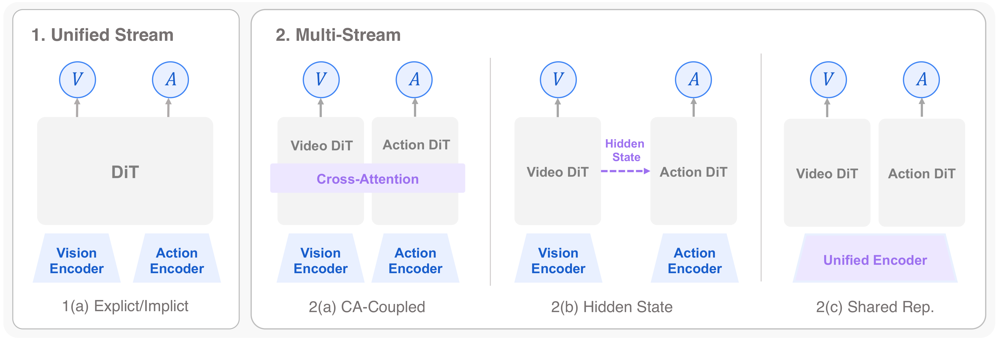

World Action Models：具身 AI 的下一个前沿（综述）
World Action Models: The Next Frontier in Embodied AI
①开源贡献 Open-source Artifacts
作为一篇综述，本文的「开源」主要是一个配套的 awesome-list / 论文索引仓库与一个可交互的项目主页（含 leaderboard 与可筛选的 paper library），而非可下载的模型权重或新数据集。仓库以 MIT 许可证发布，本身不托管权重 / 数据，而是把所有被综述的论文、代码、模型、数据集以外链（GitHub / Hugging Face / 项目页）方式索引出来，并按本文的 Cascaded / Joint 分类法组织，方便按架构家族检索。以下链接均已核实可访问。
| 类型 | 是否开源 | 内容 / 链接 |
|---|---|---|
| 论文索引仓库 Code/List | ✔ | github.com/OpenMOSS/Awesome-WAM 综述配套的 awesome-list；顶层章节对应正文结构（World Action Model / World Model for VLA / Training Data / Evaluation）。MIT License（Copyright © 2026 OpenMOSS (SII)）。仅做外链索引，不含训练 / 推理脚本。 |
| 项目主页 / Leaderboard | ✔ | openmoss.github.io/Awesome-WAM 八大板块的网页版综述 + 可筛选论文库（按 Cascaded / Joint 过滤、按时间 / 字母排序）+ 一个 WAM 方法 leaderboard 页面。已上线。 |
| 模型权重 Weights | ✘ | 本文不发布新模型权重（综述性质）。所综述的各模型权重需到各自原仓库 / Hugging Face 获取。 |
| 数据集 Dataset | ✘ | 本文不发布新数据集；正文 Table 4–7 系统整理了既有遥操作 / UMI / 仿真 / egocentric 数据集并给出来源，但数据由各原作者托管。 |
| Benchmark / 环境 | ✘ | 本文不提供新 benchmark；Table 8–9 汇总了 40+ 既有评测协议（如 LIBERO、RoboTwin、WorldModelBench、Physics-IQ、WorldSimBench 等），均为外部资源。 |
②研究动机与贡献 Motivation & Contribution
背景与问题
近年具身 AI 收敛到一个强范式：Vision-Language-Action（VLA）模型——复用预训练的 vision-language backbone 作为通用机器人策略，把动作生成建模为在大规模视觉 / 语言表征之上的条件 token 预测。RT-2、OpenVLA、$\pi_0$ 等展示了惊人的语义泛化：能跟随新语言指令、操纵没见过的物体、在不同 embodiment 间迁移。VLA 的目标可以写成一个纯粹的「观测→动作」映射：
$$\mathcal{L}_{\text{VLA}} = \mathbb{E}_{(o,l,a)\sim\mathcal{D}}\big[-\log p(a\mid o,l)\big]$$但 VLA 有一个结构性缺陷：它只学反应式映射，不显式建模世界在干预下如何演化。换句话说，策略并不「预想」自己动作的后果。这种缺乏预测式物理推理的特性限制了泛化——尤其在需要预判未来状态的场景里。与此同时，纯 World Model（WM）走的是另一条路，只建模前向动力学：
$$\mathcal{L}_{\text{WM}} = \mathbb{E}_{(o,a,o')\sim\mathcal{D}}\big[-\log p(o'\mid o,a)\big]$$它能模拟环境演化，却不直接产生可执行控制。一个自然的方向就此浮现：把 world modeling 的能力装进具身策略里——既要预测未来，又要根据预测产生动作。这条线最近迅速升温，但文献高度碎片化：架构五花八门、训练目标各异、应用场景分散，缺一个统一的概念框架。
本文的切入点
作者把这一新兴范式正式命名并定义为 World Action Models（WAMs）：一类把预测式状态建模与动作生成统一起来的具身 foundation model，其目标是建模未来状态与动作的联合 / 条件分布，而非仅仅是动作：
$$\mathcal{L}_{\text{WAM}} = \mathbb{E}_{(o,l,o',a)\sim\mathcal{D}}\big[-\log p(o',a\mid o,l)\big]$$其中 $o$ 是当前观测（视觉 / 本体感知 / 其他模态），$l$ 是语言指令，$a$ 是动作，$o'$ 是下一时刻观测。作者进一步给出 WAM 的两条核心判据：(1) Forward Predictive Modeling——模型必须以某种可量化的形式预测环境未来演化 $o'$（可以是 pixel 级视频 / 光流的显式预测，也可以是物理 grounded 的 latent 表征）；(2) Coupled Action Generation——动作 $a$ 必须与预想的未来 $o'$ 严格对齐推出（既可以是联合概率输出，也可以是 cascaded / unified latent 架构里的 policy conditioning）。基于联合分布是否被显式因子化，WAM 自然分成两类：
- Cascaded WAM：显式因子化目标，$p(o',a\mid o,l)=p(a\mid o',o,l)\,p(o'\mid o,l)$——先合成对未来状态的预测，动作再从中导出。世界模型与动作解码是分开训练的两个模块。
- Joint WAM：直接建模联合分布 $p(o',a\mid o,l)$——状态预测与动作生成在共享表征里联合训练、协同优化，迫使模型把环境动力学与控制信号之间的因果依赖内化进去。
论文还专门做了概念澄清，把 WAM 与几个易混概念区分开（见图 2）：Video Action Models（VAMs）是把动作和视频帧合成对齐的子集，而 WAM 是模态无关的更广超集（video 只是众多预测代理之一，也可以是单图状态转移、点云、触觉 / 力反馈）；Video Policies是由生成式视频架构这一「出身」定义的，只是借用视频骨干的时空表征做 $p(a\mid o)$，未必带显式世界建模目标；Action World Model（AWM）功能上等价，但措辞把名词落在「World Model」、强调系统是一个增强版模拟器，而「World Action Model」把名词落在「Model」、把 World 和 Action 摆成并列的两个等权组件，强调它是 VLA 的直接概念继承者、一个完整的机器人 foundation model。
核心贡献
- 提出并形式化 WAM 范式，给出 $\mathcal{L}_{\text{WAM}}$ 的统一目标与两条判据，并把它与 VLA / WM / VAM / Video Policy / AWM 逐一辨析，澄清了当前碎片化的术语边界。
- 建立结构化分类体系：Cascaded vs Joint 两大架构家族，再按生成模态（显式 pixel / 隐式 latent；autoregressive / diffusion）、条件机制、动作解码策略细分；并配套一张时间演化 + taxonomy 的方法谱系图（图 1）和一张覆盖背景 / 架构 / 数据 / 评测四大维度的全景 roadmap（图 2）。
- 系统分析数据生态：梳理喂养 WAM 的四类数据源（高保真 robot-centric 遥操作、敏捷的 UMI 式便携人手演示、可大规模生成的仿真、互联网级 human / egocentric 视频），讨论各自在「迁移难度 vs 扩展难度」坐标上的取舍（图 7），并整理成 Table 4–7。
- 综合新兴评测协议：把 WAM 评测组织成世界建模能力（视觉保真度 / 物理常识 / 动作可行性）与动作策略能力两条轴，整理 40+ benchmark（Table 8–9），并指出当前评测把两者割裂打分、缺乏「联合评测」的关键空白。
- 提炼开放挑战：架构耦合是否真需要显式 pixel 预测、多模态物理状态表示、数据混合配方、长程规划与时间抽象、推理延迟（real-time 控制的「latency tax」）、评测方法学、安全部署等七大方向。

③方法：WAM 的分类体系 Taxonomy
综述的「方法」核心是它的分类法。整体框架如图 2 的方法谱系图所示：所有 WAM 从一个共同根分叉成左侧 Joint WAM（紧耦合世界预测与动作生成，再分 Autoregressive / Diffusion-based，连续路线又细分 Unified Stream / Multi-Stream）与右侧 Cascaded WAM（世界建模与动作执行主要解耦，沿 Explicit / Implicit 两条对齐轨迹演化）。作者强调这些结构是探索性方向而非严格的相互替代。下面分两大家族展开。

3.1 在 VLA 之前：World Model 怎样服务 VLA
在把世界模型「装进」策略之前，世界模型先是作为外部工具服务 VLA 的训练与评测（图 3）。作者归纳出四种用法：(a) Imitation Learning——用世界模型生成 / 过滤训练轨迹来增广模仿学习数据（如 DREMA 用 object-centric Gaussian Splatting + 物理仿真做单样本策略学习；Ctrl-World 合成成功轨迹做 SFT，把 $\pi_{0.5}$-DROID 在下游任务成功率提升 44.7%）；(b) Reinforcement Learning——把学到的世界模型当 surrogate environment，在 imagination 里 rollout 做 model-based RL（Dreamer 系列）；(c) Reward Modeling——从生成式世界模型导出奖励信号（VIPER 用视频预测兼容性做 action-free reward；Diffusion Reward 用条件视频扩散的熵；GenReward / SRPO 用 latent 对齐 / V-JEPA 2 latent 做 progress-wise 奖励）；(d) Policy Evaluation——把世界模型当 data-driven 模拟器做闭环 rollout 测试（Ctrl-World 逐帧注入动作；Veo Robotics 用动作条件视频生成做红队测试）。

3.2 Cascaded WAM：先预测未来，再解出动作
Cascaded WAM 用一个两阶段串行管线：阶段一的世界模型先合成一个代表预想未来的「视觉计划」，阶段二的动作模型再从这个计划里解出可执行控制命令。这种解耦带来天然的归纳偏置——世界模型不必懂机器人运动学，动作模型不必解长程场景预测——但也引入了贯穿所有设计决策的两阶段耦合问题。按中间「规划载体」的类型分两类（见图 4）。

4.1.1 Explicit Planning：pixel-space 中间表征
最直接的做法用原始 pixel 帧作中间表征——可解释、且能充分利用互联网级视频生成模型的表征能力。按动作如何从合成视频里抽取，又分两支：
- Learned Action Extraction（学到的逆动力学）：
UniPi奠定了「文本条件时空 U-Net 扩散合成任务执行视频 + 卷积 IDM 在相邻帧间回归动作」的两阶段蓝本，但单次长程生成会语义漂移、误差累积。后续工作针对性改进：VLP引入 VLM 做层次化子动作生成 + tree-search 价值打分以约束误差；RoboEnvision用非自回归策略，先生成关键帧再插值；ThisThat用指代表达（"this"/"that"）+ 手势坐标解决同类多物体的语言歧义；Say, Dream, and Act用对抗蒸馏减少去噪步、并解耦轨迹规划与执行频率；TesserAct把预测目标扩展到 RGB-D + surface normal，引入显式几何约束；MVISTA-4D用轨迹级 latent 优化 + 残差 IDM 替代逐步 IDM。还有Vidar（统一双臂建模）、Gen2Act（零样本调 VideoPoet）、Veo-Act（接触阶段用门控把控制权交给反应式 VLA）、VAG/ $\pi_{0.7}$（把第二阶段 IDM 换成 1D U-Net / 预训练 VLA）。 - Geometric Action Extraction（几何抽取）：把动作抽取从「逆动力学学习问题」变成「解析可算的几何问题」。以光流为中间表征：
AVDC从生成视频算稠密光流、解析推 SE(3)，全程无需动作标注；Im2Flow2Act把光流估计搬到 latent；3DFlowAction升到 3D 光流；NovaFlow/Dream2Flow推向零训练。以位姿跟踪为代理：Dreamitate（工具 6-DoF 位姿 + 立体几何）、4DGen（多视角 RGB + 3D point map）、RIGVid（FoundationPose 跟踪物体 + 轨迹重定向）、LVP（重建 3D 手姿映射到末端轨迹 + Diffusion Forcing）。
这一类方法对应正文 Table 1 的系统对比，关键维度包括：中间表征（Pixel RGB / 光流 / latent）、阶段一骨干（U-Net / DiT / Cosmos / WAN / Veo-3 等）、阶段二模型、是否需要动作标注（Act. Label）、是否零样本（无需任务特定训练），以及在 Sim / Real 上的评测平台。
4.1.2 Implicit Planning：latent 中间表征
pixel 级视频合成的计算开销是 real-time 部署的主要瓶颈。隐式路线观察到：扩散过程中形成的中间 latent 已编码了规划所需的动力学信息，解码回 pixel 空间是多余的，于是把规划载体换成始终停留在压缩表征里的 latent 序列。代表：VPP（VAE 编码观测 + 扩散单步预测未来 latent + 轻量 policy，首次在该框架达到 real-time）；VILP（多视角 latent 规划）；S-VAM（self-distillation 把多步 SVD teacher 压成单次前向）；Video Policy（冻结视频 U-Net、单独训 action U-Net 从中间特征解码动作）；ARDuP（Co-Tracker + SAM 做伪监督聚焦交互区）；mimic-video（flow matching + 部分去噪在中间检查点抽特征）；MWM（用未来语义 mask latent 替代 RGB 预测，过滤光度噪声）；OmniVTA（视觉 + 触觉 latent 联合）。此外 LAPA 用 VQ-VAE 从无标注视频学「state-latent action」先验、只需少量真实动作微调；villa-X 引入 proprio-FDM 把 latent action 物理 grounding。
3.3 Joint WAM：在一个模型里联合预测状态与动作
Joint WAM 把未来世界状态与动作放进单一统一模型联合监督训练。中心设计问题是：世界状态与动作如何在共享预测系统里耦合。按底层「基质」分两支：autoregressive（序列化进 token 空间做因果预测）与 diffusion-based（在连续 latent 里通过扩散 / flow 并行生成）。
4.2.1 Autoregressive Generation
依赖因果、从左到右的序列解码同时参数化未来状态与控制信号。共享「因果序列建模」统一了这些架构，但把控制和视频生成强行做成严格 left-to-right 预测，带来两个张力：早期视觉幻觉会灾难性误差传播级联成动作失败；序列解码的计算瓶颈与 real-time 低延迟需求冲突。按目标表征又分三种范式（对应 Table 2）：
- Explicit Decoupled Representation（显式解耦）：模态在表征层保持分离，靠显式注入的控制 token（如 [ACT]、[OBS]）路由到结构上独立的输出头——通常连续动作解码器配上离散视觉 patch 回归分支。代表
GR-1（GPT 式因果 Transformer，双分支同时解码未来 patch + 连续动作，195M）、GR-MG（[PROG] token 把世界 rollout 分成宏 / 微步）、GR-2（VQGAN 离散视觉 + CVAE 动作 chunk，30–719M）。 - Unified Discrete Representations（统一离散）：异构模态被完全量化进单一共享 LLM 词表，物理动力学和视觉状态用同一 next-token 头生成。挑战在于设计 attention / routing 缓解长串离散 token 自回归的复合误差。
CoT-VLA（先因果生成离散视觉 chain-of-thought、再切全注意力同步预测动作，7B）、WorldVLA（modality-specific causal masking，禁止当前动作 token 关注同 chunk 内已生成动作）、RynnVLA-002（离散 MLLM + 轻量连续 Action Transformer 头）、$\mathcal{F}_1$（Mixture-of-Transformer：Generation expert 预测离散 VQ token、Action expert 从幻觉视觉 foresight 推控制，4.2B）。 - Predictive Latent Representations（预测式 latent）：放弃显式 token 生成，在抽象连续 latent 上自回归。
VLA-JEPA（基于 JEPA，把未来帧只当孤立监督目标、保持结构无泄漏，靠 embodied action token 条件一个 flow-matching 头执行物理动作，2B）。
4.2.2 Diffusion-based Generation
用多步生成过程捕捉未来状态的复杂分布，跨多步 horizon 并行生成未来世界状态与动作序列，克服自回归的序列瓶颈，支撑高频闭环控制。按预测流的结构耦合分两大类（见图 5）：

- Unified Stream（单流）：世界与动作变量被吸进一个统一 backbone（通常单个 DiT），方法特异性体现在预测目标 / 辅助 token / 条件注入方式。又分 Explicit Future Prediction（未来观测或其 latent 代理是直接预测目标）与 Implicit Future Prediction。代表：
PAD（联合去噪拼接的未来 image latent + 动作 token，消融证明去掉未来图像预测会损害控制）、VideoVLA（复用 CogVideoX-5B）、UWM（给世界 / 动作变量分配独立可控噪声等级，测试时切换 policy / forward / inverse / 纯视频四种模式）、Cosmos Policy（latent frame injection，一个 checkpoint 同时当 policy / world model / value function）、DreamZero（基于 Wan2.1，KV-cache 观测替换防漂移，系统级优化把推理推到 7Hz，14B）、GigaWorld-Policy、X-WAM（复制末层 DiT 块做 RGB-D 深度分支 + Asynchronous Noise Sampling）；离散扩散有UD-VLA。Implicit 一类有FLARE（可学习 future token 的激活对齐冻结 teacher 编码的真实未来视觉 embedding）、FRAPPE（冻结 RDT backbone + 多对齐 expert，Mixture-of-Prefix-and-LoRA）。 - Multi-Stream（多流）：世界与动作分配到多个协调分支，交互方式必须被架构显式指定。三种耦合接口：
① Cross-Attention Coupling——独立 Video DiT 与 Action DiT 通过显式 cross-attention 交互：CoVAR（Bridge Attention）、LDA-1B（MM-DiT 共享自注意力、在 DINO latent 而非 VAE latent 里预测未来）、DUST（两模态用独立噪声时间步 + 独立 flow-matching 损失，异步采样）、LingBot-VA/DexWorldModel/AIM（收敛到 Mixture-of-Transformers 作统一耦合基质 + KV-cache）、Motus（加 semantic understanding expert 做 Tri-modal Joint Attention）、MotuBrain、AdaWorldPolicy（加 force predictor 第三专家）。
② Hidden-State Coupling——世界分支把内部表征（imagined latent 轨迹 / 多尺度转移特征 / 去噪 hidden state）单向传给动作分支：DiT4DiT（hook 算子截取 hidden 激活经 cross-attention 传给 Action DiT）、Fast-WAM（推理时整支去掉未来视频分支、只用单次前向编码当前视觉）、WAV（显式 trajectory-value 分支）、Act2Goal（Multi-Scale Temporal Hashing 组织 proximal/distal 时间结构 + HER 式 goal relabeling）。
③ Shared Representation——视觉与动作先融进共同 latent / 统一 encoder 再各自解码：UVA（共享 Transformer + 两个轻量扩散头，masked 训练让同一 backbone 当 policy / video / forward-inverse dynamics / planner，0.5B）、PhysGen（NOVA backbone，Lookahead Multi-Token Prediction）。
这一支对应正文 Table 3，按 Unified/Multi-Stream × Explicit/Implicit × 三种耦合接口组织，列出各模型参数规模（如 DreamZero 14B、Motus 8B、UD-VLA 8B、UVA 0.5B）、骨干（Cosmos / Wan / CogVideoX / Genie Envisioner 等）、I/O 模态与 Sim/Real 评测。
④评测协议与数据生态 Evaluation & Data
综述没有自己的实验数字，但系统综合了 WAM 的评测协议与训练数据生态，这相当于本文的「实验评估」部分——它评估的是整个领域的方法论现状。
评测设置：两条轴
由于尚无统一协议同时评估「预测未来的保真度」和「生成动作的有效性」这两个相互依赖的成分，现有工作采用解耦范式，沿两条轴分别打分：
- World Modeling Capability（世界建模能力），再分三个并行维度—— 视觉保真度（像素级 PSNR / SSIM，感知级 LPIPS / DreamSim / DINO 相似度，分布级 FVD）； 物理常识（object dynamics + trajectory plausibility：VideoPhy、PhyGenBench、VBench-2.0、WorldModelBench、Physics-IQ 等，查物体连续性、接触 / 碰撞 / 状态变化是否符合因果与物理约束，以及运动 / 轨迹是否平滑可控——WorldScore、EWMBench）； 动作可行性（生成视频是否保留了足够的动作相关信息以支持控制推断与下游执行：WorldSimBench 的 Implicit Manipulative Evaluation、以及 "Wow, wo, val!" 的 IDM Turing Test）。对应 Table 8。
- Action Policy Capability（动作策略能力）：直接测策略产生精确、鲁棒、可泛化控制信号的能力，系统综述了 2019–2026 的 40+ benchmark，分五组——通用操作（MetaWorld、RLBench、LIBERO、ManiSkill 系列、RoboCasa、RoboVerse、COLOSSEUM、AGNOSTOS、GemBench、SimplerEnv 等）、双臂 / 人形（RoboTwin、BiGym、HumanoidBench、HumanoidGen）、移动操作（ManipulaTHOR、HomeRobot、BEHAVIOR-1K）、接触 / 形变操作（SoftGym、PlasticineLab、DaXBench、TacSL、ManiFeel）、真机评测（RoboArena、RoboChallenge、Maniparena）。对应 Table 9，按 Generalization / Multi-task / Long-horizon / Language / Data-Scaling / Sim2Real / Dexterity / Memory / Lifelong 等评测焦点标注。
关键评测指标定义
视觉保真度的几个核心指标（越靠近真实越好 / FVD 越低越好）：
$$\text{PSNR}(x,y)=10\log\!\Big(\tfrac{\text{MAX}^2}{\text{MSE}(x,y)}\Big),\qquad \text{SSIM}(x,y)=\frac{(2\mu_x\mu_y+C_1)(2\sigma_{xy}+C_2)}{(\mu_x^2+\mu_y^2+C_1)(\sigma_x^2+\sigma_y^2+C_2)}$$PSNR 用最大信号与 MSE 的对数比衡量重建保真；SSIM 比较亮度 / 对比度 / 结构。感知 / 语义级用 LPIPS（深特征空间加权距离）、DreamSim（人类三元组判断训练的融合 embedding 相似度 $1-\lVert E(x)-E(y)\rVert_2$）、DINO 余弦相似度。分布级用 FVD（在预训练视频特征空间算 Fréchet 距离，反映整体真实感与时序动力学）：
$$\text{FVD}=\lVert\mu_r-\mu_g\rVert_2^2+\text{Tr}\!\Big(\Sigma_r+\Sigma_g-2(\Sigma_r\Sigma_g)^{1/2}\Big)$$主要「结果」：评测维度全景
用一张表概括本文整理的世界建模评测三轴（搬自 Table 8 的结构）：
| 评测轴 | 问的问题 | 代表 benchmark / 指标 |
|---|---|---|
| 视觉保真度 | 生成视频看起来是否逼真、时序一致？ | PSNR / SSIM（像素）、LPIPS / DreamSim / DINO（感知 / 语义）、FVD（分布） |
| 物理常识 · object dynamics | 物体是否守恒、接触 / 碰撞 / 状态变化是否合物理？ | VideoPhy、PhyGenBench（PhyGenEval）、VBench-2.0、WorldModelBench（五条物理律检查）、Physics-IQ |
| 物理常识 · 轨迹合理性 | 运动是否平滑、可控、时序稳定？ | WorldScore（motion accuracy/magnitude/smoothness）、EWMBench（EEF 轨迹 HSD / nDTW / DYN） |
| 动作可行性 | 生成视频能否被翻译回可执行动作？ | WorldSimBench（Implicit Manipulative Eval）、"Wow, wo, val!"（IDM Turing Test + 真机执行成功率） |
本文给出的最有冲击力的「结果解读」来自动作可行性轴："Wow, wo, val!" 把一个 IDM 套在生成视频上推动作序列、再用真机执行成功率评判，结果很多视觉上很有说服力的模型成功率几近归零。这把「动作可行性」确立为独立于外观与物理真实感的第三评测轴，也直接说明：在视觉保真度榜上分高，完全不代表这个世界模型「能用」于控制。
数据生态：四类数据源的取舍
WAM 的独特之处在于统一的数据消化能力：既能吃高质量 $(o_t,a_t,o_{t+1})$ 三元组紧耦合表征，又能靠联合训练策略吃海量无配对数据（如无动作标注的视频）。因此数据建设不只是堆 robot-centric 数据，而要战略性混合「严格耦合的演示」与「无约束观测」。原文 Figure 7 把四类数据源画在「迁移难度（Y 轴）vs 扩展难度（X 轴）」坐标上：robot-centric 遥操作在「易迁移、难扩展」一角，human/ego 视频在「海量易扩展、难迁移」一角。
- Robot-Centric 遥操作（高质量、复杂 setup）：严格对齐的高频动作-状态对，几乎零 sim-to-real gap。沿「扩规模」（QT-Opt、MT-Opt、RoboNet、BridgeData、RT-1、Open-X Embodiment 跨 22 机器人聚合超百万轨迹、DROID、UnifoLM-WBT 高 DoF 人形）与「深化感知」（多视角 3D：RH20T / Robo360 / RoboData；触觉 / 灵巧：RoboSet / DexCap / FuSe / AgiBot World）两条线演进。对应 Table 4。
- UMI 式便携人手演示（好保真、低 setup 成本）：手持 3D 打印夹爪 + 可穿戴相机，非专家也能在真实环境采集，经视觉跟踪 / 重定向对齐到机器人可执行动作。FastUMI、FastUMI-100K（>100K 轨迹）、RealOmin（>3000 家庭、百万级）、Hoi!、RDT2（约 10000 小时）。兼具 egocentric 视频的环境多样性与厘米级动作约束。对应 Table 5。
- 仿真数据（易扩展、有 domain gap）：物理引擎本质上是个精确的计算式世界模型，提供 privileged information（完美深度、精确 6D 位姿、无遮挡多视角）。ManiSkill2、MimicGen / DexMimicGen、InternData-A1（>630k 轨迹）、SynGrasp-1B（千万级抓取）、RoboCasa、RoboCerebra、TesserAct（285k 对齐 RGB-D-normal 做 4D 世界建模）、TLA Dataset（触觉-语言-动作对）。对应 Table 6。
- Human / Egocentric 视频（海量、迁移难度最大）：互联网级 human / ego 视频是被动世界动力学的近乎无界先验。被动建模（SSv2、EPIC-KITCHENS、Ego4D 超 3600 小时、HowTo100M 1.36 亿 clip、Kinetics-700、DreamDojo 44000 小时）+ 用位姿估计弥合「动作 gap」（把人手当通用末端执行器：Assembly101、H2O、Ego-Exo4D、ARCTIC、HOT3D、EgoDex 829 小时 / 194 任务、Humanoid Everyday / PH²D 对齐人形运动学）。对应 Table 7。
关键「消融」：显式世界建模到底有没有用？
综述里最接近「决定性消融」的证据来自 PAD：消融实验确认，去掉未来图像预测或视频 co-training 会明显损害控制性能——说明显式世界建模监督对动作训练质量和推理时性能都有实质贡献。但另一组证据（如 Fast-WAM、Being-H0.7 在推理时直接丢掉世界分支仍保持竞争力）指向相反方向：世界建模的好处可能主要来自训练期的辅助梯度，而非推理时真去生成未来帧。这一矛盾正是本文反复强调的开放问题。
⑤洞见 Insights
2）显式 pixel 预测可能不是必需品。越来越多证据表明，世界建模的主要效用或许来自训练期的辅助梯度，而非推理时真去重建高维未来帧；多个框架在测试时移除未来预测头并不显著掉点。这指向一个更高效的范式：用 latent-predictive（如 JEPA 式）方法在联合 latent 里预测抽象未来状态、聚焦环境的因果不变量、绕开 pixel 重建瓶颈——把目标从「像素级重建」改成「动作条件的 latent 状态转移」。
3）WAM 的数据优势在于「无配对数据」的可消化性。VLA 严格需要 $(o_t,a_t)$ 配对、受限于昂贵稀缺的遥操作；WAM 靠联合训练能额外吃海量 action-free 互联网视频，把人手当通用末端执行器。但「人类视频到底贡献了什么」尚不清楚——本文提出把它拆成 low-level 物理先验 / mid-level 因果动力学 / high-level 任务逻辑三层可迁移知识，呼吁用信息论视角设计数据混合配方与 embodiment-aware 过滤机制。
局限与未来（本文自陈的开放挑战）
- 架构耦合缺乏受控对比：cascaded / joint-diffusion / 离散 token / 隐式对齐百花齐放，却没有在匹配的规模 / 数据 / 评测下做过系统消融——「显式视觉预测是否真为物理 grounding 所必需」仍是经验上不清楚的问题，亟需严谨消融把领域从「架构时尚」推向「有原则的设计选择」。
- 多模态物理状态表示：现有 WAM 几乎都只在 RGB 模态预测未来，而接触操作最关键的物理信息（触觉分布、接触力、声学、材料 compliance）恰恰在 pixel 空间不可见——世界模型的盲区正好在它最该建模的物理交互处。需要 modality-adaptive prediction：有富传感流时产物理 grounded 预测、没有时优雅退化到纯视觉。
- 长程规划与时间抽象：当前多在短程单交互上评测；长程会有分布漂移累积、动作误差复合、连续生成长轨迹算力不可承受。三条路径：modular hierarchy（WAM 当低层执行器 + VLM 高层规划）、intrinsic hierarchical WAM（多分辨率未来预测）、scaling of temporal context（扩 WAM 的「记忆」、避开注意力的二次开销）。
- 推理延迟（latency tax）：世界预测带来严重延迟，威胁闭环控制可行性。DreamZero 经系统级优化推到 7Hz，仍远落后非生成式 VLA 的 50Hz。引出一个少被直接研究的理论问题：下游控制到底需要多少预测保真度？指向 task-adaptive predictive fidelity——按任务的精度需求与误差容忍度动态调整预测深度 / 分辨率。
- 安全部署：自信地想象一个错误未来、再据此 commit 一长串难以中断的动作，后果可能比反应式策略更严重。但预测能力也带来机会——prediction-integrated safety：把对想象未来的不确定性估计当作安全监控的一等输入，在执行前用物理约束 / 保守不确定性核验预测动作。
与相关工作的关系（基于本文自身论述）
本文把 WAM 明确定位为 VLA 的直接概念继承者：VLA 解决了「把大规模视觉-语言预训练的语义理解 grounding 到电机行为」，但停在反应式映射；WAM 在此之上加入预测式物理推理。相对于经典 model-based RL（Dreamer 系列的 RSSM / TSSM、PlaNet 的 latent 动力学）与表征预测（JEPA / I-JEPA / V-JEPA 2），本文把它们都纳入「VLA 之前的世界模型」脉络（图 3 的四种 WM-for-VLA 用法），强调 WAM 的新意在于把世界模型从「离线监督 / 外部模拟器」转成「内部实时预测核心」。相对于 VAM / Video Policy / AWM 等近义词，本文用「预测承诺 + 模态无关」两个维度把 WAM 划成最广的、不绑定视频骨干的超集，并主张其名称把「World」和「Action」摆成等权组件、强调它是一个完整的机器人 foundation model 而非增强版模拟器。作者反复申明：这些结构是该领域当前的探索方向，而非已尘埃落定的相互替代。